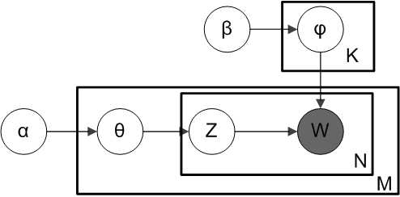
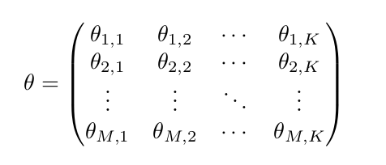
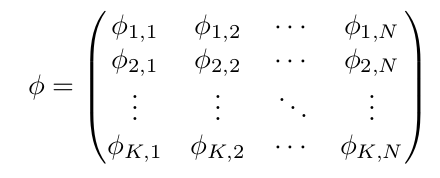
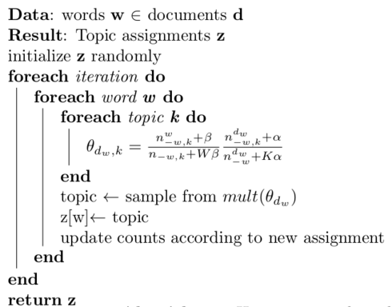

- on Sun 22 June 2014
Category: Bayesian Inference NLP
I wanted to write a two-part blog post on Latent Dirichlet Allocation. When I was first learning about this algorithm I became somewhat frustrated because it seemed that many learning resources either explained the theory behind Latent Dirichlet Allocation or provided code but none actually explained the connection between the two. In other words, it was difficult for me to identify the various aspects of the theory behind Latent Dirichlet Allocation algorithm in the code itself. So the goal of these two blog posts is to both explain the theory behind Latent Dirichlet Allocation and specifically how that theory can be transformed into implementable code. In this case, I will be using the Scala programming language because that is what I am currently working with professionally.
This first blog entry will focus on the theory behind LDA and the next post will focus on its transformation into implementable code.
Why Learn about Latent Dirichlet Allocation (LDA)?
There are many reasons to want to learn about LDA such as
- What it does is very useful. Given a set of documents, it assigns to each topic a distribution over words and to each document a distribution over topics in a completely unsupervised way. So essentially, it is a way to figure out what each document in a set of documents is about without having to actually read them! For that reason, it is a great tool to use for a multitude of text categorization tasks.
- It is a great practical example of Bayesian inference. If you are looking to improve your understand Bayesian inference, understanding LDA would definitely help with this.
Probability Distributions involved in LDA
The two probability distributions used in LDA are the multinomial distribution and the Dirichlet distribution.
The Multinomial Distribution
The multinomial distribution models the histogram of outcomes of an experiment with \(k\) possible outcomes that is performed \(T\) times. The parameters of this distribution are the probabilities of each of the \(k\) possible outcomes occurring in a single trial, \(p_1,...,p_k\). This is a discrete, multi-variate distribution with probability mass function
\(P(x_1,...,x_k |T,p_1,...,p_k)=\frac{T!}{\prod_{i=1}^kx_i!}p_i^{x_i}\) where \(x_i \geq 0\)
A good example of how the multinomial distribution is used is to think of rolling a dice several times. Say you want to know the probability of rolling 3 fours, 2 sixes, and 4 ones in 9 total rolls given that you know the probability of landing on each side of the dice. The multinomial distribution models this probability.
The Dirichlet Distribution
It is obvious from its name that the Dirichlet distribution is involved in Latent Dirichlet Allocation. The Dirichlet distribution is sometimes difficult to understand because it deals with distributions over the probability simplex. What this means is that the Dirichlet distribution is a distribution over discrete probability distributions. Its probability mass function is
\(P(P=\{p_i\}|\alpha_i)=\frac{\prod_i \Gamma(\alpha_i)}{\Gamma(\sum_i \alpha_i)}\prod_ip_i^{\alpha_i-1}\) where \(\sum_ip_i=1\) and \(p_i \geq 0\)
The key to understanding the Dirichlet distribution is realizing that instead of it being a distribution over events or counts (as most probability distributions are), it is a distribution over discrete probability distributions (eg. multinomials).
Another important note is that the Dirichlet distribution is the conjugate prior to the multinomial distribution. This means that the posterior distribution for a multinomial likelihood with a Dirichlet prior over its parameters is also a Dirichlet distribution. In fact, the posterior is the following Dirichlet distribution
\(P(p_1,...,p_k|x_1,...x_k)=\frac{\prod_i \Gamma(\alpha_i+x_i)}{\Gamma(N+\sum_i \alpha_i)}\prod_ip_i^{\alpha_i+x_i-1}\)
The proof is not shown here but it can be derived by multiplying the multinomial likelihood with the Dirichlet prior in a straight-forward way.
The LDA Generative Model
LDA uses what is called a generative model as a means to explain how the observed words in a corpus are generated from an underlying latent structure. The following picture shows how this generative model works.

This may look complicated at first but every part of this model can be explained. Node \(w\) represents the observed words in the corpus. It is shaded to indicate that it is observed and not a latent variable. But before we explore the other nodes in the model, the intuition behind the generative model should be explained. LDA makes the assumption that a document in a corpus is a distribution over topics and a topic is a distribution over words. So given a distribution over topics for a particular document, the actual words that appear in the document are generated by first sampling a topic from the distribution over topics then sampling a word from the sampled topic which is itself a distribution over words. This is a somewhat natural way to think about documents. A document can contain several different topics with varying proportions and some words are more associated with some topics than others.
Now let's get back into the generative model. Instead of starting with \(w\) the observed word node, let's start at the outside. Both \(\beta\) and \(\alpha\) are each parameters of two separate Dirichlet distributions which are represented by the two outer nodes in the generative model. These two Dirichlet distributions are priors for two multinomial distributions which are parameterized by \(\theta\) and \(\phi\) where \(Multinomial(\theta)\) is the distribution over topics for a given document and \(Multinomial(\phi)\) is the distribution over words for a given topic. And since there are \(K\) topics and \(M\) documents, there are \(M\) \(\theta\) vectors, each of which are \(K\) elements in length. Similarly, since there are \(N\) unique words in the corpus, there are \(K\) \(\phi\) vectors, each of which are \(N\) elements in length. A good way to think of these parameters is as two matrices.


Where each row is a parameterization of a multinomial distribution. It also probably important to note that in the previous section the multinomial distribution was said to have a parameter \(T\) representing the number of trials. In the case of LDA, \(T=1\) (sometimes this is called a categorical distribution rather than a multinomial distribution). And finally, \(Z\) is the topic assigned to word \(w\).
So, in summary, the generative process is the following.
- All of the Multinomical parameter vectors for all documents \(\theta\) are each sampled from \(Dir(\alpha)\).
- The other Mutlinomial parameter vectors for all topics \(\phi\) are each sampled from \(Dir(\beta)\).
- The for each word index \(n\) in document \(i\) where \(i \in \{1,...,M\}\).
- The topic assignment for \(n\), \(z_{n,i}\) is sampled from the Multinomial distribution with parameter \(\theta_i\) corresponding to document \(i\).
- The word with index \(n\) is sampled from the Multinomial distributinon with parameter determined from the topic that was sampled in the last step \(\phi_{z_n,i}\).
And given the above graphical model, it is straight-forward to show that the joint distribution is
\(P(\theta,\phi,Z,W|\alpha,\beta)=\prod_{j=1}^KP(\phi_j|\beta)\prod_{i=1}^MP(\theta_i|\alpha)\prod_{n=1}^NP(z_{i,n}|\theta_i)P(w_{i,n}|z_{i,n},\phi_{z_{i,n}})\)
Therefore, the ultimate goal is to determine the unknown, hidden parameters \(\theta\), \(\phi\), and \(Z\). This is done is through a process known as probabilistic inference. What this basically means is, given that we know the general structure of how the documents are generated and we also know the words that are present in each document, can we work backwards and find the most likely parameters \(\theta\), \(\phi\), and \(Z\) that could have generated these documents? The next section explains how this inference process is carried out for the LDA model.
Inference - Collapsed Gibbs Sampling
We want to know the latent parameters \(\theta\), \(\phi\), and \(Z\) which represent the topic distributions for each document, the word distributions for each topic and the topic assignments for each word respectively. But the only information that we initially have is how many times each word appears in each document (LDA uses a bag-of-words approach). So we need to infer these latent parameters from the observed data. This means that we want to know \(P(\theta,\phi,Z|W)\) which is known as the posterior distribution. From the joint distribution shown above, the posterior distribution can be written as
\(P(\theta,\phi,Z) | W)=\frac{P(\theta,\phi,Z,W|\alpha,\beta)}{P(W|\alpha,\beta)}\)
But it turns out that the denominator \(P(W|\alpha,\beta)\) is intractable so we cannot compute the posterior is this usual way. This tends to happen a lot in Bayesian inference, so there are a class of approximate inference methods that attempt to compute a distribution that is close to the actual posterior (but much easier to calculate). In the case of LDA, the original paper by Blei et al. used variational inference to approximate the posterior. But since then, collapsed Gibbs sampling (a MCMC inference technique) has been more commonly used to do this. Before we get into the particular collapsed Gibbs sampling inference algorithm, it would be useful to have a quick review of Gibbs sampling and MCMC methods in general.
Gibbs Sampling
Gibbs sampling is part of a class of approximate inference methods known as Markov Chain Monte Carlo (MCMC) methods. Generally speaking, MCMC methods work by creating a Markov Chain whose stationary distribution is the posterior distribution that we are looking for. Consequently, if you simulate this Markov chain, eventually the state of the Markov chain will look like samples from the desired posterior distribution and given these samples you can get a good idea of what the posterior distribution looks like. Gibbs sampling specifies a particular way of constructing this Markov chain. Say your target distribution is \(P(\textbf{x})=P(x_1,...,x_n)\) but there is no closed form solution for \(P(\textbf{x})\) (like our posterior distribution) so you cannot sample from it directly. In Gibbs sampling, if you can sample from the conditional distribution \(P(x_i |x_{-i})\), a Markov chain can be constructed such that the samples from the conditionals converge to samples from the joint (i.e. the target distribution). The Markov chain progresses as follows
- Randomly intialize the first sample \((x_1,...,x_n)\)
- For each cycle \(t\) until convergence.
- sample \(x_1^t\) from \(P(x_1|x_2^{t-1},...,x_n^{t-1})\)
- sample \(x_2^t\) from \(P(x_2|x_1^{t-1},x_3^{t-1},...,x_n^{t-1})\)
- continue until you sample \(x_n^t\) from \(P(x_1|x_1^{t-1},...,x_{n-1}^{t-1})\)
So each cycle \(t\) produces a new sample of \((x_1,...,x_n)\). Eventually the Markov chain will converge and the samples will be very similar to those from the target distribution \(P(\textbf{x})\).
Collapsed Gibbs Sampling for LDA
Now let's return to LDA. Before the collapsed Gibbs sampling procedure can be described, we must realize an important result. Take an arbitrary parameter vector \(\theta_{i}\) (i.e. the distribution over topics in document \(i\)). From the graphical model, we know that the topic assignments \(z_i\) follow a multinomial distribution with a Dirichlet prior on \(\theta_i\) . These two distributions are conjugate pairs which means that that the posterior distribution of \(\theta_i\) also follow a Dirichlet distribution \(Dir(\theta_i|n_i+\alpha)\) (this is a standard result but you can find a short proof here) where \(n_i\) is the vector of word counts for document \(i\). So, to get an estimate of \(\theta_i\) we can take the expected value of this posterior distribution over \(\theta_i\). By the definition of the expected value of a Dirichlet distribution, the estimate for \(\theta_{i,k}\) (the proportion of topic \(k\) in document \(i\)) is
where \(n_i^k\) is the number of words in document \(i\) that have been assigned to topic \(k\). And by the exact same argument, the estimate for \(\phi_{k,w}\) (the proportion of word \(w\) in topic \(k\)) is
where \(n_w^k\) is the number of times word \(w\) is assigned to topic \(k\) (over all documents in the corpus). So what is the significance of this? The point is that both of these estimates \(\theta\) and \(\phi\) only depend on the topic assignments \(Z\). Therefore, we are able to only focus on inferring the latent variable \(Z\) and the other latent variables can be computed directly from \(Z\). This makes things much easier.
We can infer the topic assignments \(Z\) from the observed data using collapsed Gibbs sampling. From the previous section on Gibbs sampling, we need to come up with a conditional distribution that is easy to sample from whose joint distribution is the posterior distribution that we are interested in. The posterior distribution that we are interested in is \(P(Z|W)\) which is the probability of all of the topic assignments given all of the observed words in all of the documents. So the conditional that we need to sample from is \(P(z_i=j|z_{-i},w)\). But we need to know the form of this distribution to make sure that we can easily sample from it. So let's derive it.
From Bayes' rule,
\(P(z_i=j|z_{-i},w) \propto P(w_i|z_i=j,z_{-i},w_{-i})P(z_i=j|z_{-i})\)
Now let's focus on the left-most term. We can marginalize over \(\phi\) to get
\(P(w_i|z_i=j,z_{-i},w_{-i})=\int P(w_i | z_i=j,\phi_j)P(\phi_j |z_{-i},w_{-i})d\phi_j\)
Let's first look at the first term inside the integral. Since we are conditioning on the \(\phi_j\) parameters, \(P(w_i | z_i=j,\phi_j)=\phi_{w_i,j}\). The second term inside the integral \(P(\phi_j |z_{-i},w_{-i})\) is the posterior distribution of a multinomial likelihood combined with a Dirichlet prior (again!) which has a nice closed form solution that we have seen before. After solving this integral (exact steps ommitted, but not difficult) we get
\(P(w_i|z_i=j,z_{-i},w_{-i})=\frac{n_{-i,j}^{w_i}+\beta}{n_{-i,j}+W\beta}\)
Where \(n_{-i,j}^{w_i}\) is the total number of \(w_i\) instances assigned to topic \(j\) not including the current \(w_i\) and \(n_{-i,j}\) is the total number of words assigned to topic \(j\) not including the current word. As for the second term in the first equation \(P(z_i=j|z_{-i})\) , we can follow the same general procedure. First we marginalize over \(\theta_i\) to get
\(P(z_i=j|z_{-i})=\int P(z_i=j|\theta_i)P(\theta_{d_i}|z_{-i})d\theta_{d_i}\)
And just as before, \(P(z_i=j|\theta_{d_i})=\theta_{d_{i},j}\) and \(P(\theta_i|z_{-i})\) is the posterior of a mutlinomial-Dirichlet conjugate pair. The integral turns out to be
\(P(z_i=j|z_{-i})=\frac{n_{-i,j}^{d_i}+\alpha}{n_{-i}^{d_i}+K \alpha}\)
where \(n_{-i,j}^{d_i}\) is the number of words assigned to topic \(j\) in document \(d_i\) not counting the current one and \(n_{-i}^{d_i}\) is the total number of words in document \(d_i\). Now let's put everything together to get our final conditional distribution for the Gibbs sampler.
Then we carry out the Gibbs sampling procedure as usual to get samples from the posterior
Putting it all Together
Hopefully, at this point, all aspects of Latent Dirichlet Allocation are somewhat clear. In terms of implementation, everything hinges on the Gibbs sampling inference step. The topic assignments are initialized randomly. Then the Gibbs procedure is run while keeping track of the required document and topic counts. Once the sampling has converged, the document/topic distributions \(\theta\) and topic/word distributions \(\phi\) can be trivially computed from the learned topic assignments. The following pseudocode outlines this process in greater detail.

And, as stated previously, these topic assignments can be used to compute the counts necessary to determine the other hidden variables \(\theta\) and \(\phi\). See Part II of this blog post which explains how to translate this theory into Scala code.
Resources
- The original Paper on LDA that uses variational inference instead of Gibbs sampling. Latent Dirichlet Allocation - Blei, Ng, Jordan
- The original paper on collapsed Gibbs sampling for LDA. Probabilistic Topic Models - Griffiths, Steyvers
- Another nice technical report that shows much more detail than what I have shown. Parameter Estimation for Text Analysis - Heinrich